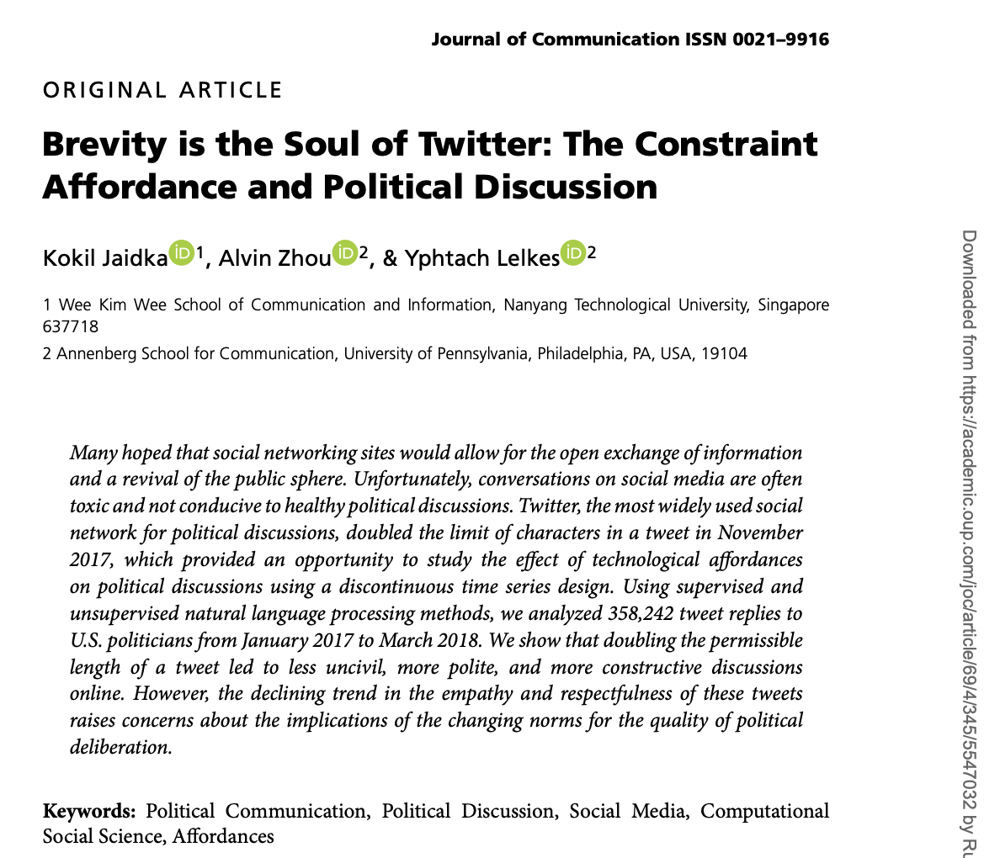
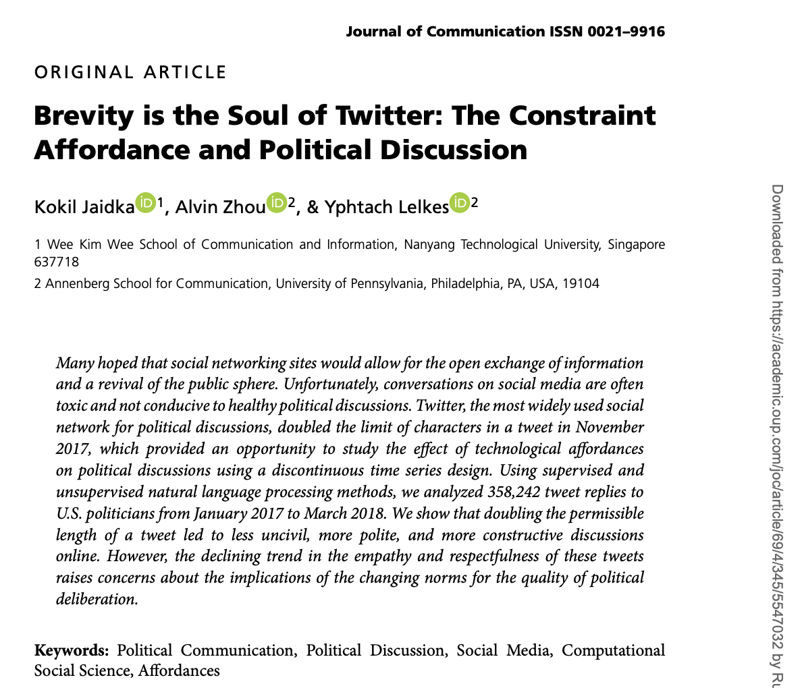
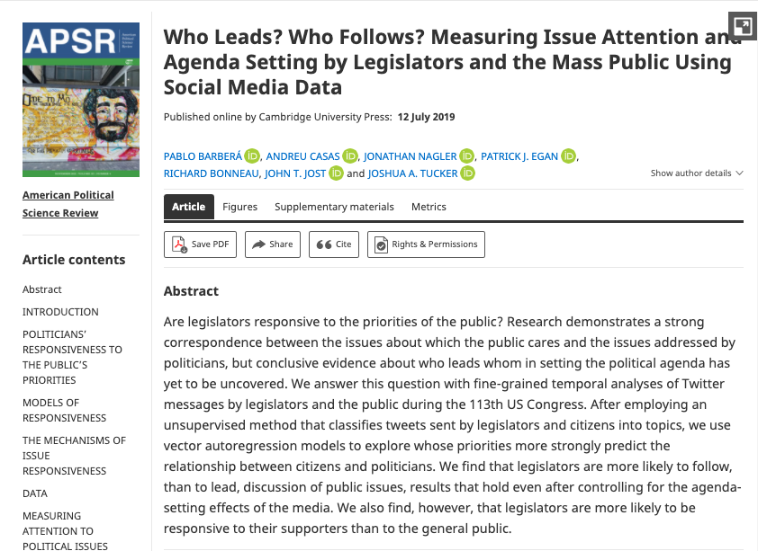
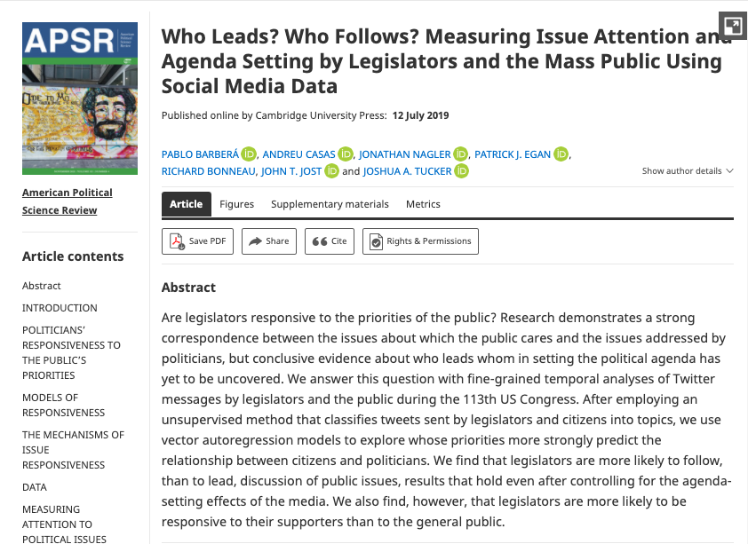
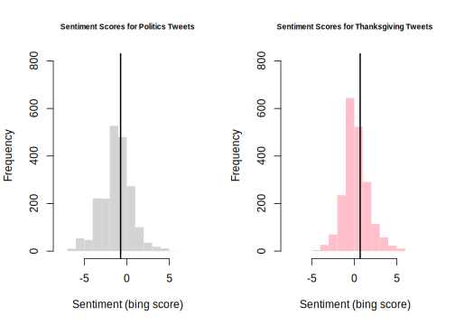

11.7 Application: Sentiment Analysis
In this example we will conduct a sentiment analysis of tweets extracted through the Twitter API.
- You can use dataset provided on Canvas or extract your own tweets
- To extract your own, you need a Twitter account and
rtweetinstalled.
Using tweets in political science?
Research on Twitter is actually pretty common in the social sciences, including political science. Part of the reason for this is the access Twitter provides via API, which makes it an easier platform to study.
Below are some examples of uses of Twitter data in social science research.
- Scholars are often interested in characterizing the tone, such as incivility or toxicity, in online political discussions.
- They may also use Twitter as a mechanism to study interactions between the public and elected officials and other public figures, as well as studying how politicians use Twitter as a form of strategic communication.
- Political communications scholars have studied the extent to which journalists use Twitter to interpret public opinion, as well as study how media can control and set the agenda of what people discuss on Twitter.
When doing political science research on Twitter, we should be careful about how we generalize the results to other settings. There is some evidence from Bor and Peterson that those who demonstrate incivility in offline discussions carry that behavior to online settings, there are other ways that someone’s behavior on Twitter will not match their behavior in other settings or represent their underlying throughts or beliefs.
 


 

For a video explainer of the code in this section, see below. (Via youtube, you can speed up the playback to 1.5 or 2x speed.)
For this example, we need the rtweet and syuzhet packages.
install.packages("rtweet") # for extracting tweets
install.packages("syuzhet") # for late sentiment analysisIn R, we open the packages with library().
library(rtweet)
library(syuzhet)11.7.1 Searching tweets for keywords
We will first search recent tweets for keywords. The first time you use the package, it will open up an authentication browser asking you to “authorize” the Twitter app. This is giving you access to the API.
- See the details above in the course notes for the syntax of this function.
politicstweets <- search_tweets("political OR partisan", n=2000)
thanksgivingtweets <- search_tweets("thanksgiving", n=2000)After you create the tweets, you can save them as an RData file on your computer so that you don’t lose them when you close R.
save(politicstweets, file="politicstweets.RData")
save(thanksgivingtweets, file="thanksgivingtweets.RData")These can then be loaded back into R at anytime.
load("data/politicstweets.RData")
load("data/thanksgivingtweets.RData")load("politicstweets.RData")
load("thanksgivingtweets.RData")11.7.2 Sentiment Analysis Overview
Oftentimes, beyond characterizing the length or topic of a set of text, we might want to know the tone of the text. There are many ways to measure tone or “sentiment.” One approach extends what we did with dictionary analysis.
- Researchers have developed dictionaries of words that are typically associated with positive or negative sentiment. We will use the
bingdictionary. - Sometimes, researchers go so far as to create dictionaries for discrete emotions (e.g., happiness) or other types of measures, such as toxicity levels or hate speech.
- Using these pre-existing dictionaries, we can then count how many words in a body of text have positive vs. negative tone to summarize the sentiment of a document.
Like any dictionary analysis, there are limitations to this “bag of words” approach– looking at the words individually without considering the context in which they are mentioned.
11.7.3 Implementing sentiment analysis
The get_sentiment() function will calculate the net positive - negative score of a piece of text according to a specified dictionary. We can store this as a new variable.
politicstweets$sentiment <- get_sentiment(politicstweets$text,
method="bing")
thanksgivingtweets$sentiment <- get_sentiment(thanksgivingtweets$text,
method="bing")
## Example output
politicstweets$sentiment[1:10]## [1] -2 -3 4 1 -7 -2 -3 -3 -4 0Let’s compare the sentiment of these sets of tweets to help answer the question: Should we talk about politics at Thanksgiving dinner?
We add a plotting concept: Plotting multiple plots.
## Set par
par(mfrow = c(1, 2)) # 1 row with 2 plots
## Plot just the first object
hist(politicstweets$sentiment,
xlab="Sentiment (bing score)",
main="Sentiment Scores for Politics Tweets",
cex.main=.7,
ylim = c(0, 800),
xlim = c(-8, 8),
border= F)
## Add lines for the mean sentiment
abline(v=mean(politicstweets$sentiment), lwd=2)
## Second plot
hist(thanksgivingtweets$sentiment,
xlab="Sentiment (bing score)",
main="Sentiment Scores for Thanksgiving Tweets",
cex.main = .7, col="pink",
ylim = c(0, 800),
xlim = c(-8, 8),
border= F)
abline(v=mean(thanksgivingtweets$sentiment), lwd=2)
11.7.4 Your Twitter Analysis
As mentioned above We can also search the most recent 3200 tweets of a given user.
Here we extract tweets from AOC’s Twitter account
aoctweets <- get_timeline("aoc", n=3200)As a challenge, conduct your own analysis of the congresswoman’s tweets. It could be a sentiment analysis, or you could use one or more tools from the previous sections on text analysis.